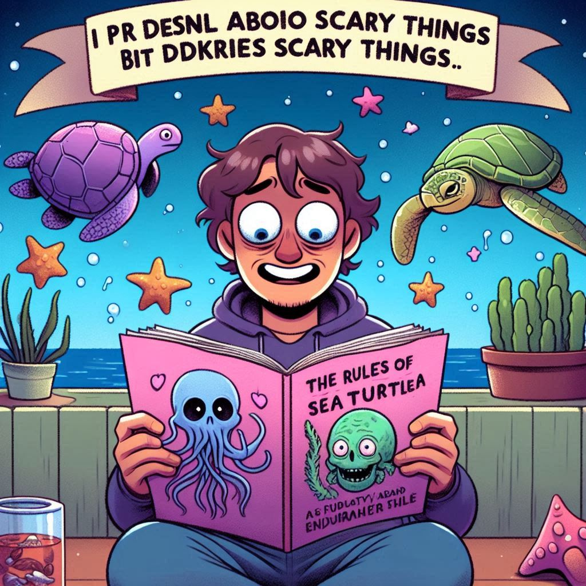

너머의 세계
목차
작가
유린
출판일
2024년
감상평에 대한 AI그림
언제부터 였는지 모르겠다. 무서운 건 극도로 싫어하는 내가, 바다거북스프 문제를 종종 접하더니 나폴리탄 괴담에 규칙 괴담까지 찾아서 읽는 꼴이라니... 하지만 재밌었다.

감상평에 대한 AI평가
~~~~AI평가~~~~~
✨ 이렇게 무서운 이야기를 싫어하는 사람이 결국 다양한 괴담을 재미있게 읽게 되었다니, 호러 장르의 매력이 얼마나 강력한지를 보여주는 좋은 예인 것 같아요. 나폴리탄 괴담과 규칙 괴담의 흥미로운 전개와 긴장감이 독자를 사로잡은 게 분명합니다
✨ 이 감상평은 독자의 감정 변화를 잘 담고 있으며, 무서움을 극복하고 새로운 장르에 흥미를 가지게 되는 과정을 잘 표현하고 있습니다. 특히, 나폴리탄 괴담과 규칙 괴담이 독자에게 큰 인상을 남긴 점이 인상적입니다
✨ 나도 무서운 이야기를 별로 좋아하지 않는데, 감상평을 보니 나도 한번 읽어보고 싶은 생각이 드네요. 두려움을 이겨내고 재미를 찾는 과정이 공감됩니다. 나폴리탄 괴담과 규칙 괴담이 정말 재미있나 보네요!